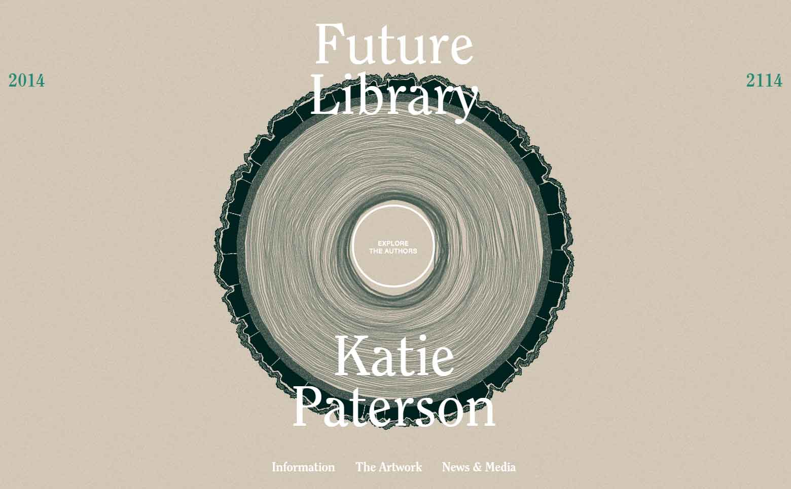
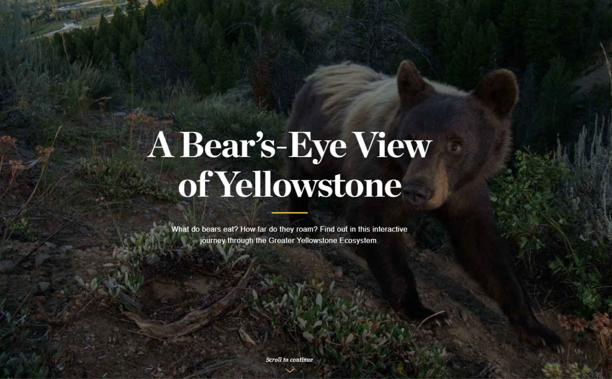
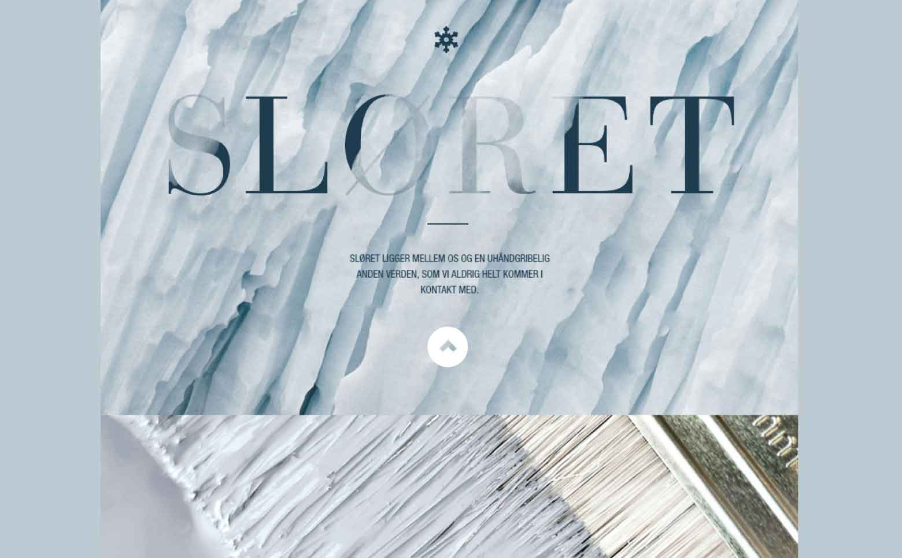

MINISITIO - FERRANDO LUCIO
Relevamiento
Capturas
Elecciones
Relevamiento y Mapa de Sitio
Mapa de Sitio
Relevamiento. Sitios consultados para obtener ideas y realizar la construcción del trabajo final.
  
Regresar al Sitio